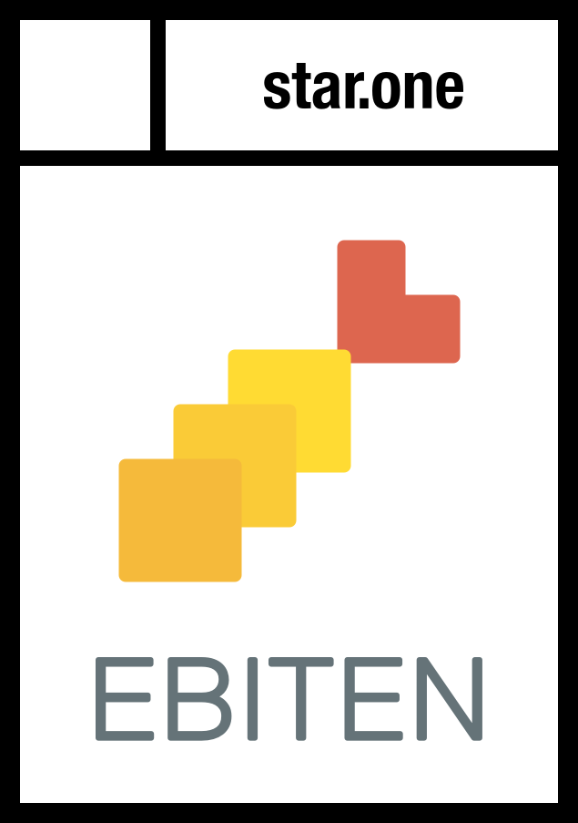

A simple 2D game library in Go
A mobile game written in Go (Ebiten). I developed the runtime part.
A low-level library to play sound on multiple platforms
An MP3 decoder in pure Go
To be published at 技術書典 3 on 2017-10-22.

Published at 技術書典 2 on 2017-04-09.